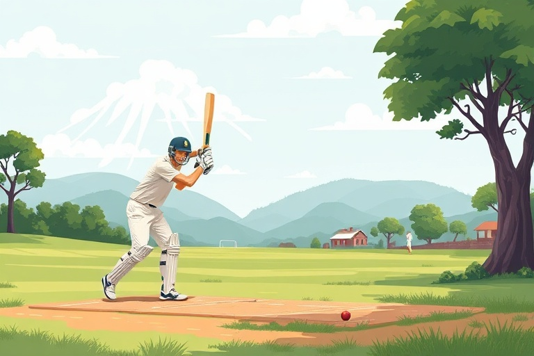

A Beginner's Guide to Cricket: Core Rules, Basic Skills, and How to Start Playing
Category: cricket | Language: en
Cricket is a bat-and-ball game played between two teams of eleven players on a large grass field. At the center of the field lies a 22-yard rectangular strip called the pitch, where most of the action takes place. One team bats to score as many runs as possible, while the opposing team bowls and fields to limit scoring and dismiss the batters. Once an innings concludes, the teams swap roles. This guide breaks down the essential rules, basic scoring methods, foundational techniques, and safety requirements so anyone can start watching or playing with confidence.
Understanding the pitch layout is essential before learning the flow of play. At each end of the pitch stand the wickets, consisting of three vertical wooden posts called stumps topped by two small wooden sticks called bails. Painted lines across the pitch, known as creases, define player boundaries. The popping crease sits roughly four feet in front of the stumps; batters must have a bat or body part grounded behind this line to remain safe from being run out or stumped. The bowler runs in from one end and releases the ball toward the batter standing at the opposite popping crease.
Scoring runs occurs in two primary ways: running between the wickets or hitting the ball to the outer boundary. When a batter strikes the ball and it travels safely away from fielders, both batters run toward opposite ends of the pitch. Each completed crossing equals one run. If a struck ball rolls or bounces across the outer boundary line, four runs are awarded automatically without running. If the ball clears the boundary perimeter entirely on the fly, six runs are scored. Batters can also accumulate runs through bowling infractions, such as wide balls (deliveries pitched too far outside the batter's reach) or no-balls (overstepping the crease or bowling dangerously high), which grant an extra run and require a re-bowl.
A batting team aims to protect their ten dismissals, often referred to as losing wickets. The most common dismissals are bowled, where the delivery gets past the bat and dislodges the bails; caught, where a fielder cleanly catches a struck ball before it touches the turf; and leg before wicket (LBW), where the ball strikes the batter's body when it would have otherwise hit the stumps. Batters can also be run out if fielders throw the ball into the stumps while a runner is outside the crease, or stumped if the wicketkeeper dislodges the bails while the batter has stepped forward outside the crease to play a shot.
Learning sound batting mechanics starts with a balanced stance and a proper grip. Hold the handle with both hands close together; the grooves between your thumbs and index fingers should form a 'V' shape pointing down the back edge of the bat. Stand sideways to the bowler with feet shoulder-width apart, knees slightly flexed, and your head held still with eyes level. Keep the bat lifted slightly behind your back hip. As the ball approaches, decide whether to step forward onto your front foot to hit full-length deliveries driving along the turf, or push back onto your rear foot to defend or pull short-pitched deliveries bouncing toward your chest.
Bowling requires delivering the ball with a straight arm; bending and deliberately straightening the elbow during release is an illegal throw, known as chucking. As a beginner, focus on a smooth, rhythmic walk-up or short run-up rather than sheer speed. Release the ball at the highest point of your arm swing, aiming for a 'good length'—the area on the pitch roughly four to six meters ahead of the batter where it is difficult for them to attack. When fielding, remain on the balls of your feet, watch the bat face closely, and adopt the 'long barrier' technique by dropping your rear knee flat against the ground behind your hands to block fast ground balls.
Safety is paramount because a traditional regulation cricket ball is constructed from hard leather and cork, capable of causing serious injury. Before facing a hard leather ball, players must wear certified protective gear: an approved helmet with a securely fitted face grille, padded batting gloves, leg guards (pads), a chest guard, and an abdominal protector (commonly called a box). For beginners practicing without protective gear, using a soft rubber ball, a tennis ball, or a tape ball (a tennis ball wrapped tightly in electrical tape) eliminates safety risks while allowing you to develop sound hand-eye coordination.
A frequent mistake among novice batters is attempting to hit every delivery across the line of flight using raw arm strength, which exposes the stumps and leads to top edges. Instead, practice playing with a 'straight bat,' presenting the widest flat surface of the blade to the incoming ball. Novice bowlers often strive for extreme pace, resulting in frequent wides and no-balls. Prioritize consistent rhythm, repeatable release points, and steady line and length over velocity. Shadow-batting in front of a mirror or practicing slow-motion bowling actions helps embed clean muscle memory without physical fatigue.
To take your first practical step today, grab a tennis ball and suspend it inside an old sock tied to an overhead branch, clothesline, or garage beam. Stand in your batting stance and tap the swinging ball with a straight bat for ten to fifteen minutes, focusing on meeting it with the sweet spot beneath your eyes. Once you feel comfortable with basic bat-and-ball contact, seek out a local recreational club, community park game, or indoor batting cage to practice bowling and defensive strokes in a supportive team environment.